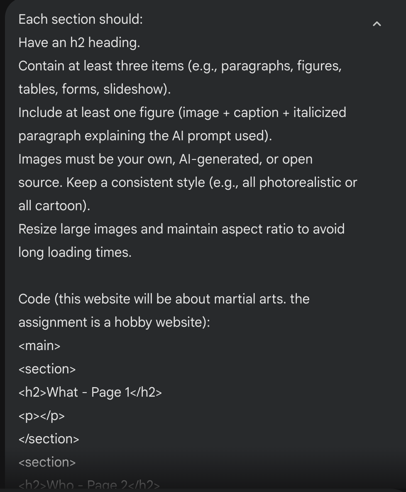
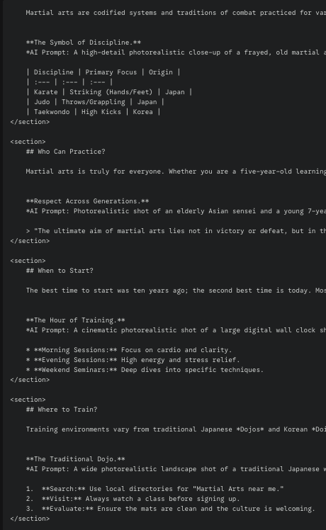
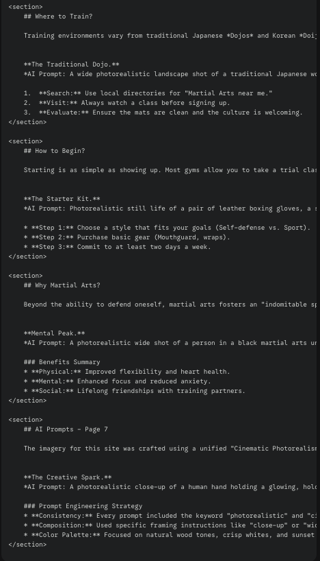
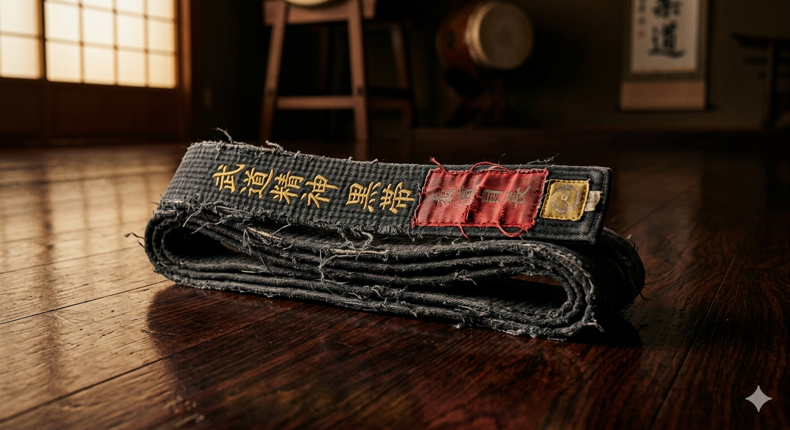
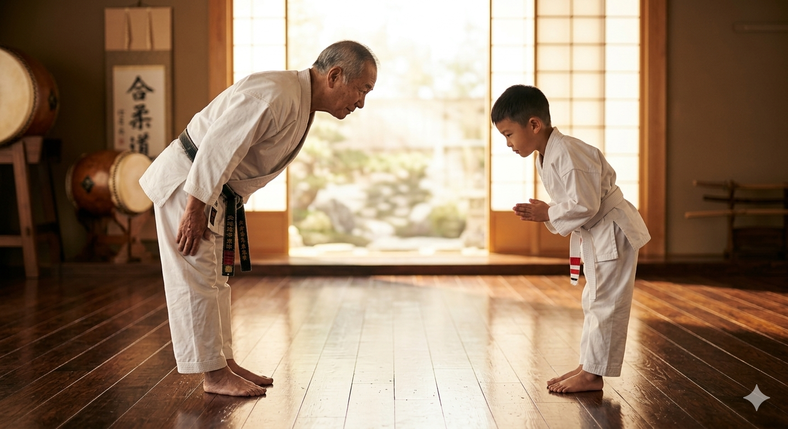
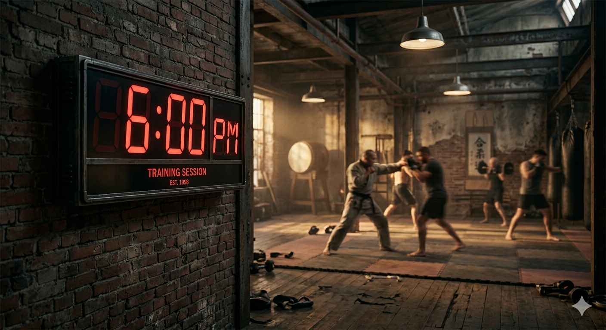
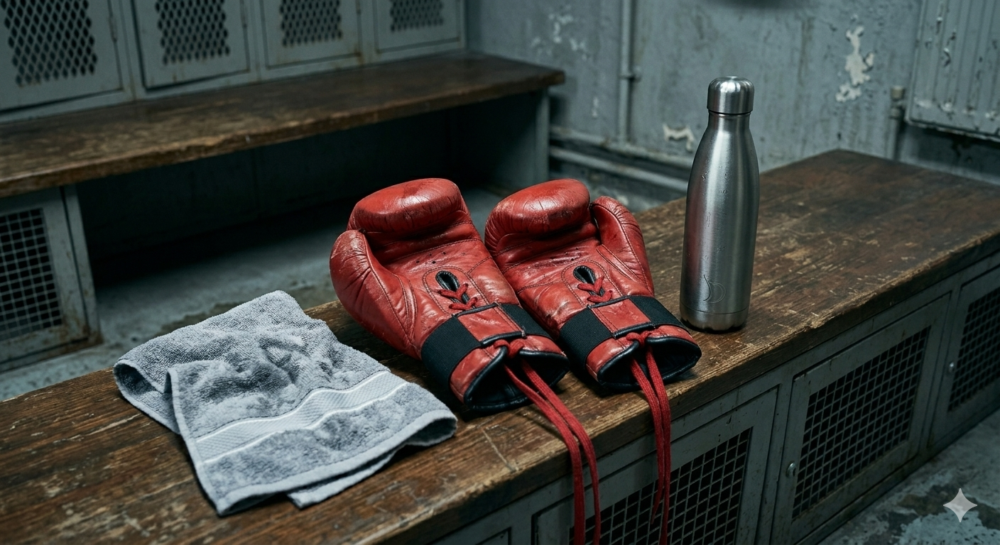
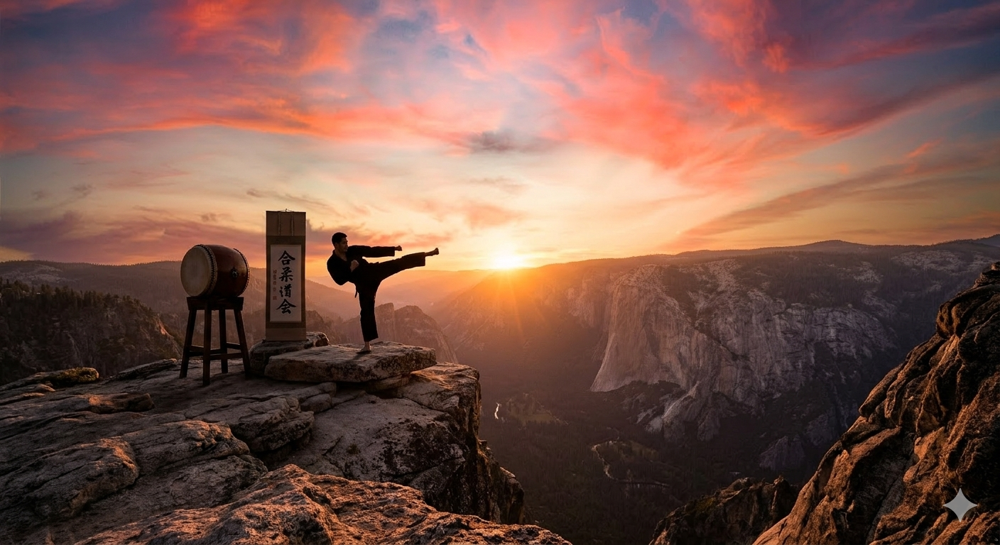
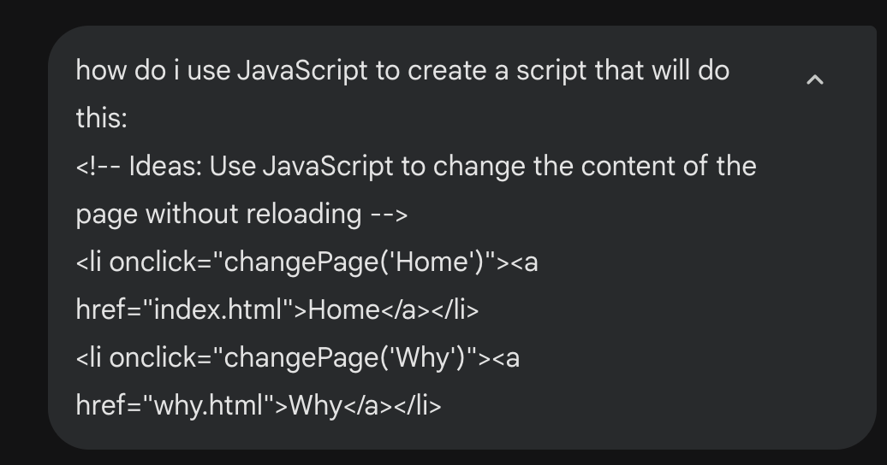
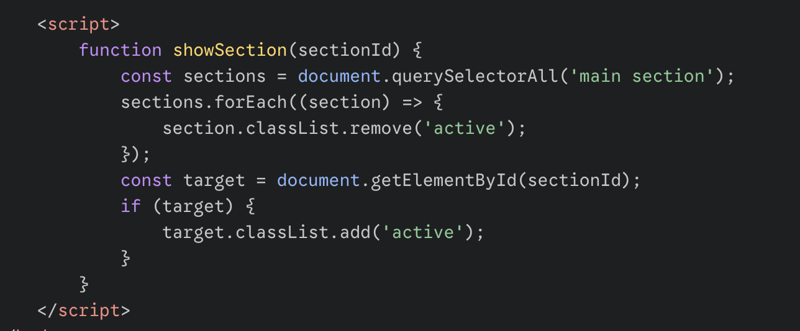

Generating Martial Arts content
Prompt:

Result:


Martial arts are codified systems and traditions of combat practiced for various reasons such as self-defense, competition, and mental development. From the striking of Muay Thai to the grappling of Brazilian Jiu-Jitsu, it is a diverse world of discipline.

AI Prompt: A high-detail photorealistic close-up of a frayed, old martial arts black belt neatly folded on a dark, polished mahogany dojo floor, cinematic lighting, 8k resolution.
Martial arts is truly for everyone. Whether you are a five-year-old learning focus or a sixty-year-old staying mobile, the "Who" of martial arts is defined by a desire to improve rather than existing athletic ability.
"The ultimate aim of martial arts lies not in victory or defeat, but in the perfection of the character."

AI Prompt: Photorealistic shot of an elderly Asian sensei and a young 7-year-old student in white kimonos bowing to each other in a bright, sunlit modern dojo.
The best time to start is today. Consistency is more important than the specific hour you train. Most schools offer flexible schedules to accommodate busy lives.
| Session | Benefit |
|---|---|
| Morning | Increased Metabolism |
| Evening | Stress Relief |
| Weekend | Technical Deep Dives |

AI Prompt: A cinematic photorealistic shot of a large digital wall clock showing 6:00 PM in a gritty, industrial-style MMA gym, blurred figures of people training.
Training environments vary from traditional Japanese Dojos to modern "Globo-gyms." The environment often dictates the atmosphere—some prefer ritual, while others prefer raw intensity.
AI Prompt: A wide photorealistic landscape shot of a traditional Japanese wooden dojo with sliding paper doors, located in a misty bamboo forest at dawn.
Starting is as simple as showing up. Most gyms allow you to take a trial class in comfortable athletic wear before committing to a uniform (Gi).
Make sure to bring a water bottle and a positive attitude. The "white belt" mindset—being open to mistakes—is your greatest tool for growth.

AI Prompt: Photorealistic still life of a pair of leather boxing gloves, a stainless steel water bottle, and a hand towel on a locker room bench, cinematic lighting.
Beyond the ability to defend oneself, martial arts fosters an "indomitable spirit." It reduces stress through physical exertion and builds incredible functional strength.

AI Prompt: A photorealistic wide shot of a person in a black martial arts uniform performing a side kick on a mountain peak during a vibrant orange sunset.
Prompt:

Result:


I just used the prompts listed in the results from the 1st prompt to create the images in Gemini.
Prompt:

Result:
